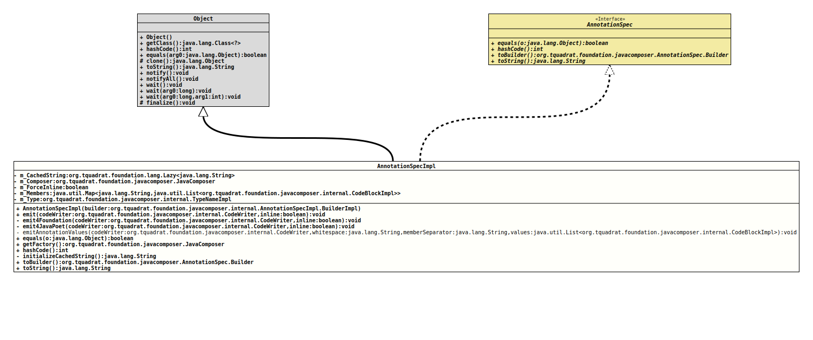

Class AnnotationSpecImpl
java.lang.Object
org.tquadrat.foundation.javacomposer.internal.AnnotationSpecImpl
- All Implemented Interfaces:
AnnotationSpec
@ClassVersion(sourceVersion="$Id: AnnotationSpecImpl.java 1062 2023-09-25 23:11:41Z tquadrat $")
@API(status=INTERNAL,
since="0.0.5")
public final class AnnotationSpecImpl
extends Object
implements AnnotationSpec
The implementation of
AnnotationSpec
for a generated annotation on a declaration.- Author:
- Square,Inc.
- Modified by:
- Thomas Thrien (thomas.thrien@tquadrat.org)
- Version:
- $Id: AnnotationSpecImpl.java 1062 2023-09-25 23:11:41Z tquadrat $
- Since:
- 0.0.5
- UML Diagram
-

UML Diagram for "org.tquadrat.foundation.javacomposer.internal.AnnotationSpecImpl"
{kind=link}
-
Nested Class Summary
Nested ClassesModifier and TypeClassDescriptionstatic final classThe implementation ofAnnotationSpec.Builderfor a builder of anAnnotationSpecImplinstance.Nested classes/interfaces inherited from interface org.tquadrat.foundation.javacomposer.AnnotationSpec
AnnotationSpec.Builder -
Field Summary
FieldsModifier and TypeFieldDescriptionLazily initialised return value oftoString()for this annotation.private final JavaComposerThe reference to the factory.private final booleanA flag that indicates whether the inline representation is forced for this annotation.private final Map<String,List<CodeBlockImpl>> The code blocks that define this annotation.private final TypeNameImplThe name of this annotation. -
Constructor Summary
ConstructorsConstructorDescriptionCreates a newAnnotationSpecImplinstance. -
Method Summary
Modifier and TypeMethodDescriptionstatic final AnnotationSpecImpl.BuilderImplDeprecated, for removal: This API element is subject to removal in a future version.static final AnnotationSpecImpl.BuilderImplDeprecated, for removal: This API element is subject to removal in a future version.Got obsolete with the introduction ofJavaComposer.final voidemit(CodeWriter codeWriter, boolean inline) Emits this annotation to the given code writer.private final voidemit4Foundation(CodeWriter codeWriter, boolean inline) Emits this annotation to the given code writer.private final voidemit4JavaPoet(CodeWriter codeWriter, boolean inline) Emits this annotation to the given code writer using the original JavaPoet layout.private static final voidemitAnnotationValues(CodeWriter codeWriter, String whitespace, String memberSeparator, List<CodeBlockImpl> values) Emits the values of this annotation to the given code writer.final booleanstatic final AnnotationSpecImplget(Annotation annotation) Deprecated, for removal: This API element is subject to removal in a future version.Got obsolete with the introduction ofJavaComposer.static final AnnotationSpecImplget(Annotation annotation, boolean includeDefaultValues) Deprecated, for removal: This API element is subject to removal in a future version.Got obsolete with the introduction ofJavaComposer.static final AnnotationSpecImplget(AnnotationMirror annotation) Deprecated, for removal: This API element is subject to removal in a future version.Got obsolete with the introduction ofJavaComposer.final JavaComposerReturns theJavaComposerfactory.final inthashCode()private final StringThe initializer form_CachedString.final AnnotationSpec.BuilderCreates a new builder that is initialised with the components of this annotation.final StringtoString()
-
Field Details
-
m_CachedString
Lazily initialised return value oftoString()for this annotation. -
m_Composer
The reference to the factory. -
m_ForceInline
A flag that indicates whether the inline representation is forced for this annotation. -
m_Members
The code blocks that define this annotation. -
m_Type
The name of this annotation.
-
-
Constructor Details
-
AnnotationSpecImpl
Creates a newAnnotationSpecImplinstance.- Parameters:
builder- The builder for this instance.
-
-
Method Details
-
builder
@Deprecated(since="0.2.0", forRemoval=true) public static final AnnotationSpecImpl.BuilderImpl builder(ClassName type) Deprecated, for removal: This API element is subject to removal in a future version.Got obsolete with the introduction ofJavaComposer.Creates a builder for an instance ofAnnotationSpecImplfrom the givenClassNameinstance.- Parameters:
type- The class name.- Returns:
- The new builder.
-
builder
@Deprecated(since="0.2.0", forRemoval=true) public static final AnnotationSpecImpl.BuilderImpl builder(Class<?> type) Deprecated, for removal: This API element is subject to removal in a future version.Got obsolete with the introduction ofJavaComposer.Creates a builder for an instance ofAnnotationSpecImplfrom the givenClassinstance.- Parameters:
type- The class.- Returns:
- The new builder.
-
emit
Emits this annotation to the given code writer.- Parameters:
codeWriter- The code writer.inline-trueif the annotation should be placed on the same line as the annotated element,falseotherwise.- Throws:
UncheckedIOException- A problem occurred when writing to the output target.
-
emit4Foundation
private final void emit4Foundation(CodeWriter codeWriter, boolean inline) throws UncheckedIOException Emits this annotation to the given code writer.- Parameters:
codeWriter- The code writer.inline-trueif the annotation should be placed on the same line as the annotated element,falseotherwise.- Throws:
UncheckedIOException- A problem occurred when writing to the output target.
-
emit4JavaPoet
Emits this annotation to the given code writer using the original JavaPoet layout.- Parameters:
codeWriter- The code writer.inline-trueif the annotation should be placed on the same line as the annotated element,falseotherwise.- Throws:
UncheckedIOException- A problem occurred when writing to the output target.
-
emitAnnotationValues
private static final void emitAnnotationValues(CodeWriter codeWriter, String whitespace, String memberSeparator, List<CodeBlockImpl> values) throws UncheckedIOException Emits the values of this annotation to the given code writer.- Parameters:
codeWriter- The code writer.whitespace- The whitespace to emit.memberSeparator- The separator for the members.values- The members to emit.- Throws:
UncheckedIOException- A problem occurred when writing to the output target.
-
equals
- Specified by:
equalsin interfaceAnnotationSpec- Overrides:
equalsin classObject
-
get
@Deprecated(since="0.2.0", forRemoval=true) public static final AnnotationSpecImpl get(Annotation annotation) Deprecated, for removal: This API element is subject to removal in a future version.Got obsolete with the introduction ofJavaComposer.Creates an instance ofAnnotationSpecfrom the givenAnnotationinstance.- Parameters:
annotation- The annotation.- Returns:
- The new instance of
AnnotationSpec.
-
get
@Deprecated(since="0.2.0", forRemoval=true) public static final AnnotationSpecImpl get(Annotation annotation, boolean includeDefaultValues) Deprecated, for removal: This API element is subject to removal in a future version.Got obsolete with the introduction ofJavaComposer.Creates an instance ofAnnotationSpecfrom the givenAnnotationinstance.- Parameters:
annotation- The annotation.includeDefaultValues-trueto include the annotation's default values,falseto ignore them.- Returns:
- The new instance of
AnnotationSpec.
-
get
@Deprecated(since="0.2.0", forRemoval=true) public static final AnnotationSpecImpl get(AnnotationMirror annotation) Deprecated, for removal: This API element is subject to removal in a future version.Got obsolete with the introduction ofJavaComposer.Creates an instance ofAnnotationSpecfrom the givenAnnotationMirrorinstance.- Parameters:
annotation- The annotation mirror.- Returns:
- The new instance of
AnnotationSpec.
-
getFactory
Returns theJavaComposerfactory.- Returns:
- The reference to the factory.
-
hashCode
- Specified by:
hashCodein interfaceAnnotationSpec- Overrides:
hashCodein classObject
-
initializeCachedString
The initializer form_CachedString.- Returns:
- The return value for
toString().
-
toBuilder
Creates a new builder that is initialised with the components of this annotation.- Specified by:
toBuilderin interfaceAnnotationSpec- Returns:
- The new builder.
-
toString
- Specified by:
toStringin interfaceAnnotationSpec- Overrides:
toStringin classObject
-
JavaComposer.